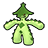
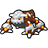

Access to:
West: Lentimas Town
East: Undella Town
Accessible in the area: Strange House
Places of interest:
The first time the player explores the inner area, Bianca will request to accompany them. Every wild and Trainer battle that the player engages in while she is present will be a Double Battle. She has a level 40 Musharna, a level 38 Watchog, and a level 38 Stoutland.
During a swarm, the player has a 40% chance of encountering the swarming Pokémon, and a 60% chance that their encounter is taken from the normal encounter table.
| Pokémon | Level | |
|---|---|---|
|
 |
Cacturne | lv. 40-55 |
| Pokémon | Level | Notes | |
|---|---|---|---|
|
 |
Heatran | 68 | Only if the player has the Magma Stone. If defeated or run from, it reappears after defeating the Elite Four. |
| Item | Location |
|---|---|
| Full Heal | Near the entrance from Lentimas Town |
| Escape Rope | On the hill, accessible from the interior |
| Smoke Ball | On the hill, accessible from the interior |
| TM30 Shadow Ball | Behind the Strange House |
| Item | Games | Location | Notes | |
|---|---|---|---|---|
| Max Repel | B2 | W2 | Near the exit leading toward Lentimas Town | |
| TM69 Rock Polish | B2 | W2 | At the end of the dead end east of Doctor Derek | |
| TM69 Rock Polish | B2 | W2 | North of Hiker Jared and Backpacker Kumiko | |
| Elixir | B2 | W2 | On the stalagmite south of the Scientist | Hidden. |
| Elixir | B2 | W2 | Near the Battle Girl | Hidden. |
| Hyper Potion | B2 | W2 | At the end of the dead end east of Backpacker Kiyo and Hiker Markus | |
| Hyper Potion | B2 | W2 | North of the Battle Girl | |
| Star Piece | B2 | W2 | On a stalagmite east of Battle Girl Chan | Hidden. |
| Star Piece | B2 | W2 | On a rock near the Black Belt | Hidden. |
| PP Up | B2 | W2 | South of Hiker Jared | |
| PP Up | B2 | W2 | Northwest of the Black Belt | |
| Revive | B2 | W2 | At the end of the dead end north of Battle Girl Chan | |
| Revive | B2 | W2 | Near the female Backpacker | |
| Calcium | B2 | W2 | At the end of the dead end south of the Ace Trainers | Hidden. |
| Calcium | B2 | W2 | At the end of the dead end west of the Ace Trainers | Hidden. |
| Yellow Shard | B2 | W2 | In a rock in the southern dead end west of the Ace Trainers | Hidden. |
| TM54 False Swipe | B2 | W2 | Obtained from the Scientist east of the Ace Trainers | Only after completing the area's Habitat List. |
| Nugget | B2 | W2 | East of Black Belt Corey | |
| Nugget | B2 | W2 | South of the Scientist who gives the player TM54 | |
| Red Shard | B2 | W2 | In a rock in the southeast | Hidden. |
| Blue Shard | B2 | W2 | At the end of the dead end east of Backpacker Kiyo and Hiker Markus | Hidden. |
| Green Shard | B2 | W2 | On a stalagmite north of Backpacker Kiyo and Hiker Markus | Hidden. |
| Item | Games | Location | Notes | |
|---|---|---|---|---|
| Toxic Orb | B2 | W2 | Near the entrance to 1F | |
| Flame Orb | B2 | W2 | Near the entrance to 1F | |
| Water Gem | B2 | W2 | In a small stalagmite | Hidden. |
| Fire Gem | B2 | W2 | In a rock near the big rock | Hidden. |
The following items can be found by stepping in a dust cloud.
| Red Shard | Blue Shard | Yellow Shard | Green Shard |
| Trainer | Party |
|---|---|
| Cyclist Jeremiah | Zebstrika lv. 33 (Easy Mode) / 37 (Normal Mode) / 41 (Challenge Mode) |
| Cyclist Adelaide | Unfezant lv. 33 (Easy Mode) / 37 (Normal Mode) / 41 (Challenge Mode) |
Any Double Battle while Bianca is accompanying the player will be a Multi Battle with Bianca as the player's partner Trainer.
| Trainer | Games | Party | Notes | |
|---|---|---|---|---|
| Hiker Markus | B2 | W2 | Gurdurr lv. 33 (Easy Mode) / 37 (Normal Mode) / 41 (Challenge Mode) Crustle lv. 33 (Easy Mode) / 37 (Normal Mode) / 41 (Challenge Mode) |
He can potentially be battled in a Double Battle with Backpacker Kiyo. |
| Backpacker Kiyo | B2 | W2 | Golbat lv. 33 (Easy Mode) / 37 (Normal Mode) / 41 (Challenge Mode) Swanna lv. 33 (Easy Mode) / 37 (Normal Mode) / 41 (Challenge Mode) |
He can potentially be battled in a Double Battle with Hiker Markus. |
| Doctor Derek | B2 | W2 | Swoobat lv. 35 (Easy Mode) / 38 (Normal Mode) / 42 (Challenge Mode) | After defeating him, she will heal the player's Pokémon when spoken to. |
| Backpacker Kumiko | B2 | W2 | Golbat lv. 33 (Easy Mode) / 37 (Normal Mode) / 41 (Challenge Mode) Darmanitan lv. 33 (Easy Mode) / 37 (Normal Mode) / 41 (Challenge Mode) |
She can potentially be battled in a Double Battle with Hiker Jared. |
| Hiker Jared | B2 | W2 | Boldore lv. 33 (Easy Mode) / 37 (Normal Mode) / 41 (Challenge Mode) Excadrill lv. 33 (Easy Mode) / 37 (Normal Mode) / 41 (Challenge Mode) |
He can potentially be battled in a Double Battle with Backpacker Kumiko. |
| Ace Trainer Ray | B2 | W2 | Vibrava lv. 35 (Easy Mode) / 39 (Normal Mode) / 43 (Challenge Mode) Camerupt lv. 35 (Easy Mode) / 39 (Normal Mode) / 43 (Challenge Mode) |
He can potentially be battled in a Double Battle with Hiker Ace Trainer Cora. |
| Ace Trainer Cora | B2 | W2 | Grumpig lv. 35 (Easy Mode) / 39 (Normal Mode) / 43 (Challenge Mode) Drifblim lv. 35 (Easy Mode) / 39 (Normal Mode) / 43 (Challenge Mode) |
She can potentially be battled in a Double Battle with Ace Trainer Ray. |
| Black Belt Corey | B2 | W2 | Gurdurr lv. 33 (Easy Mode) / 37 (Normal Mode) / 41 (Challenge Mode) Scraggy lv. 33 (Easy Mode) / 37 (Normal Mode) / 41 (Challenge Mode) Scraggy lv. 33 (Easy Mode) / 37 (Normal Mode) / 41 (Challenge Mode) |
This is a Rotation Battle. |
| Battle Girl Chan | B2 | W2 | Riolu lv. 33 (Easy Mode) / 37 (Normal Mode) / 41 (Challenge Mode) Gurdurr lv. 33 (Easy Mode) / 37 (Normal Mode) / 41 (Challenge Mode) Riolu lv. 33 (Easy Mode) / 37 (Normal Mode) / 41 (Challenge Mode) |
This is a Triple Battle. |
| Pokémon Ranger Eliza | B2 | W2 | Banette lv. 34 (Easy Mode) / 38 (Normal Mode) / 42 (Challenge Mode) Golduck lv. 34 (Easy Mode) / 38 (Normal Mode) / 42 (Challenge Mode) |
She will give the player a Persim Berry after the battle. |
| Pokémon Ranger Lewis | B2 | W2 | Watchog lv. 34 (Easy Mode) / 38 (Normal Mode) / 42 (Challenge Mode) Camerupt lv. 34 (Easy Mode) / 38 (Normal Mode) / 42 (Challenge Mode) |
He will give the player a Rawst Berry after the battle. |
| Trainer | Games | Party | Notes | |
|---|---|---|---|---|
| Pokémon Ranger Lewis | B2 | W2 | Watchog lv. 34 (Easy Mode) / 38 (Normal Mode) / 42 (Challenge Mode) Grumpig lv. 34 (Easy Mode) / 38 (Normal Mode) / 42 (Challenge Mode) |
He will give the player a Persim Berry after the battle. |
| Pokémon Ranger Eliza | B2 | W2 | Krokorok lv. 34 (Easy Mode) / 38 (Normal Mode) / 42 (Challenge Mode) Arcanine lv. 34 (Easy Mode) / 38 (Normal Mode) / 42 (Challenge Mode) |
She will give the player a Rawst Berry after the battle. |